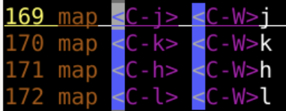
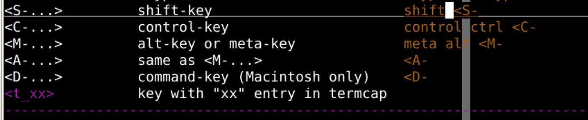

filetype 的机制解决了这个问题:mkview保存着:echo "oeasy":map <C-o> echo "oeasy":echo "oeasy"**加粗**vim 里面表示为<C-b>:h Ctrl-b:unmap <C-b>:h Ctrl-s 没有:map <C-s> i**<Esc>ea**<Esc>:map <C-s> i**<Esc>ea**<Esc>i 进入插入模式endappend*markdown 这种 filetype 的~/.vim/ftplugin/md.vim 完成相关映射的定义nmapctrl 组合键之类的东西呢？map <C-j> <C-W>jmap <C-k> <C-W>kmap <C-h> <C-W>hmap <C-l> <C-W>l
:only 和 :split之类的 :tabnew新建几个map <C-LEFT> :tabnmap <C-RIGHT> :tabpmap <c-left> :tabn<cr>map <c-right> :tabp<cr>gt、gT切换也还挺方便的1gt2gt3gt9gt:map <S-t> ioeasy 等价于:map T ioeasy:map <S-t>、 :map T 
:vim oeasy.java oeasy.html oeasy.cssmap <c-s> :%s/5.1/5.2/g<cr>:wnext<cr>:%s/5.1/5.2/g<cr>替换所有:wnext<cr> 保存并切换到下一个buffer缓存noremap <C-c> :echo "oeasy":map <F4> gg=G |"F4 for indent|把后面屏蔽"意味着不执行的注释G后面的空格是有可能出问题的:map <F4> gg=G|" F4 for indent:unmap a |"unmap aunmap 的不是 aa空格map <c-j> <c-w>jmap <c-k> <c-w>kmap <c-h> <c-w>hmap <c-l> <c-w>lmap <c-left> :tabnmap <c-right> :tabpmap <c-s> :%s/5.1/5.2/g<cR>:wnext<cr>:unmap a|" unmap a:mkview、:loadview来保存读取:tabnew